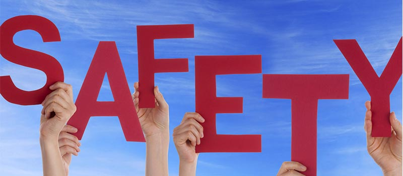

Psychedelics are defined to be a class of psychoactive substances that produce changes in perception, mood and cognitive processes.
Psychedelics affect all the senses, altering someone's thinking, sense of time and emotions. They can also cause a person to hallucinate—seeing or hearing things that do not exist or are distorted.
What are the different types of psyches?
LSD is created from a substance found in ergot, a fungus that infects rye.
Psilocybin is a naturally occurring substance found in mushrooms and is found in many parts of the world.
Mescaline is derived from the Mexican peyote and San Pedro cactus and produces similar effects to LSD.
DMT is structurally similar to psilocin. It can be synthesized in the laboratory but is also a naturally occurring component of several plants.
2C-B is a psychedelic drug first synthesize in 1974. It is considered to be both a psychedelic and a mild entactogenic.
Peyote is the most well-known and potent psychedelic cactus, although the smallest and slowest growing. Instead of growing upward to form a column, it grows as 'buttons' low to the ground. It has been utilized by Native Americans for over 5000 years.
25[-x]-NBOMe is the name for a series of drugs that have psychedelics effects. Reports indicate that there are a number of different versions of NBOMe available - all with differing effects.
How are psychedelics used?
Psychedelics have been used since ancient time by carious cultures throughout the world for their mystical and spiritual associations. LSD, magic mushrooms, Mescaline and DMT are usually swallowed, smoked or inhaled. Mushrooms are usually eaten fresh, cooked, or brewed into a 'tea'.
Occasionally, they may be mixed with tobacco or cannabis and smoked. Mescaline is usually swallowed. Peyote buttons may be ground into a powder and smoked with cannabis or tobacco. The buttons can also be chewed or soaked in water to produce a liquid.
Most forms of NBOMe are inactive if swallowed, and the most common methods of taking them are under the tongue, held in the cheek or snorted.
Generally, people who use psychedelics don't take them on a regular basis, but on occasions that may be weeks or months apart.
Safety

Effects of Psychedelics
There is no safe level of drug use. Use of any drug always carries some risk.Be cautious when using any type of drug.
Psychedelics affect everyone differently, base on:
size, weight and health
whether the person is used to taking it
wether other drugs are taken around the same time
the amount taken
the strength of the drug (varies)
environment
Bad Trips
Sometimes you can experience a 'bad trip', which is frightening and disturbing hallucinations. This can lead to a panic cause unpredictable behavior.This behavior can range from running across a road to attempting suicide.
If you take a larger amount, you are likely to experience negative effects of psychedelics.
Mixing
'Polydrug use" is a term for the use of more than one drug or type of drug at the same time - or one after another.
Use of any drug always carries some risk
If you do decide to use psychedelic, it's important to consider:
It's difficult to predict the strength and effects of psychedelics (even if they have been taken before), as the strength and potency can vary from batch to batch
People with mental health conditions or a family history of these conditions should avoid using psychedelics
Taking psychedelics in a familiar environment in the company of people who are known and trusted may alleviate any unpleasant emotional effects. Anxiety can be counteracted by taking deep, regular breaths while sitting down.
Using psychedelics is likely to be more dangerous when:
Taken in combination with alcohol or other drugs, particularly stimulants such as crystal methamphetamine or ecstasy
Driving or operating heavy machinery
judgement or motor coordination is required
alone
the person has mental health issues
Getting Help
If your use of psychedelics is affecting your health, family, relationships, work, school, financial or other life situations, or you're concerned about a loved one, you can find help and support.
Call DrugInfo on 1300 85 85 84 or email druginfo@adf.org.au to speak to a real person and your questions answered as well as advice on practical 'next steps'. It is also confidential too!
Help and Support Services search
Find a service in your local area from our list. Simply add your location or postcode and filter by service type to quickly discover help near you.